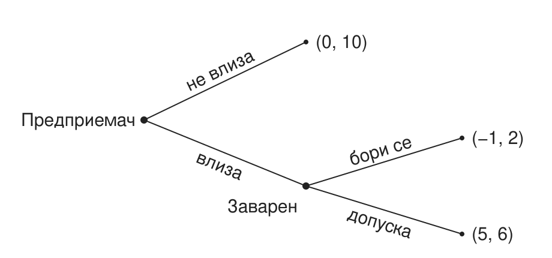
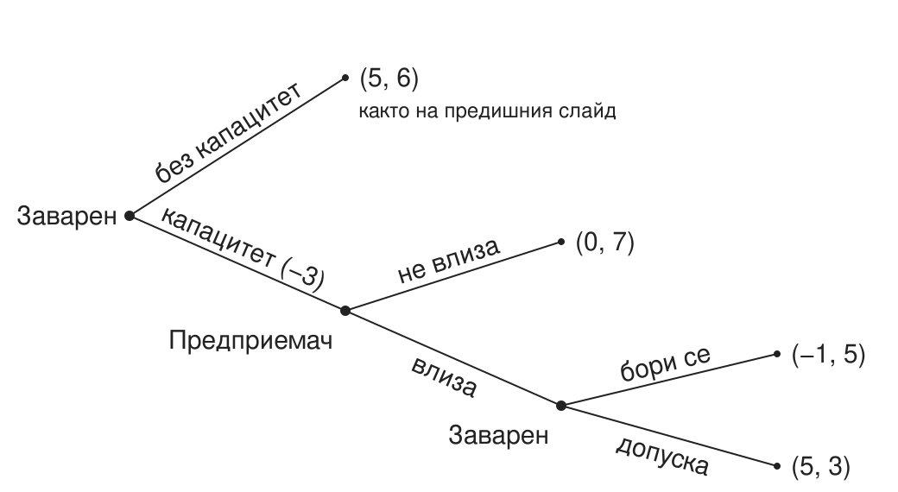

Предприемачество: динамика, продуктивност и бариери за навлизане на пазарите
Икономически основи на бизнеса, НБУ
2026-09-30
Колко оцеляват?
От 100 нови фирми в България колко са живи след пет години?
План на лекцията
- Кой е предприемачът?
- Къде отива талантът?
- Струва ли си да се навлезе на един пазар?
- На кой пазар?
- Какво ще направят заварените играчи?
- Как новите участници все пак навлизат?
- Защо трябва да се занимаваме с това?
Кой е предприемачът?
Три идеи за предприемачеството
| Автор | Предприемачът | Печалбата |
|---|---|---|
| Шумпетер (1942) | иноватор, който въвежда нови комбинации и измества старите (creative destruction) | временна, докато иновацията не бъде копирана |
| Кирцнер (1973) | откривател на възможности, които другите пропускат | ценова разлика, която другите не са забелязали |
| Найт (1921) | носител на несигурност, която не може да се застрахова | възнаграждение за тази несигурност |
Baumol, Litan & Schramm (2007): предприемач е всеки, нов или съществуващ, който предлага нов продукт или услуга или въвежда по-евтин начин да произвежда и доставя съществуващите.
Какъв тип е всеки?
- Шофьор в Bolt вечер след работа
- Служител в банка, който създава нов продукт
- Франчайз на верига кафенета
- Основател на стартъп
Разграничения: по възможност или по необходимост; предприемач или предприемач в организацията; иновация или копиране.
Къде отива талантът?
Три вида предприемачество
| Вид | Какво прави | Пример |
|---|---|---|
| Продуктивно | създава стойност | нов продукт, по-евтин процес |
| Непродуктивно | преразпределя стойност | лобиране, заобикаляне на правила |
| Разрушително | унищожава стойност, може да е незаконно | неморално, непродуктивно |
Талантът е общо взето константен. Правилата решават къде отива (Baumol 1990).
Имперски Китай
В имперски Китай най-способните не отиват в бизнеса, а на изпитите за държавни чиновници.
Къде отиват най-способните у нас днес?

Продуктивно, непродуктивно или разрушително?
Помислете за всеки случай.
- Софтуерна компания, създадена в София и продадена на глобален инвеститор (Telerik)
- Фирма, която печели почти всяка обществена поръчка в своята община
- Консултант, който „оптимизира“ проекти по европейски програми
- Телефонни измамници, които звънят на пенсионери
- Браншова организация, която лобира за нов лиценз за дейността
- Данъчен консултант, който помага на фирми законно да плащат по-малко данъци
- Приложение, което сравнява цените в супермаркетите
- Фирма, която купува патенти само за да съди производители
Струва ли си да се навлезе на един пазар?
Оцеляване и оборот на фирмите
От фирмите, създадени в България през 2015 г., през 2020 г. са активни 43% (ЕС-27: 46%). Около 4 от 10 нови фирми оцеляват пет години, близо до средното за ЕС.
Новосъздадени и закрити фирми за година, % от активните:
| 2018 | 2019 | 2020 | 2021 | 2022 | 2023 | |
|---|---|---|---|---|---|---|
| България | 23,0 | 24,0 | 23,7 | 18,3 | 18,3 | 18,7 |
| ЕС-27 | 16,8 | 18,1 | 16,1 | 18,6 | 18,9 | 19,0 |
Доходи от предприемачество
- Медианният предприемач печели по-малко, отколкото би печелил като нает (Hamilton 2000).
- Печалбите са крайно неравни: малцина печелят много.
- Buffett (1984): 225 млн. души хвърлят монета. След 20 рунда около 215 са познали всеки път, само по случайност, и пишат книги за историята си.
225 000 000 × (1/2)20 ≈ 215
Кой става предприемач
- Децата на предприемачи по-често стават предприемачи (Dunn & Holtz-Eakin 2000).
- Наследство или печалба от лотария повишават шанса да се стартира нов бизнес (Holtz-Eakin, Joulfaian & Rosen 1994; Lindh & Ohlsson 1996).
- Повечето основатели започват в бранша, в който вече са работили (Bhidé 2000).
- Успешните основатели имат по-високи резултати на тестове за способности и повече нарушени правила като тийнейджъри (Levine & Rubinstein 2017).
На кой пазар?
Граници на пазара
Двете грешки на основателите: „целият пазар на храни е наш“ и „нямаме конкуренти“.
| Граница | Определя се от | Пример |
|---|---|---|
| Физическа | докъде стига стоката | електроенергия: пазарните зони и междусистемните връзки |
| Регулаторна | какво казва законът | лицензите за таксиметров превоз в София |
| Икономическа | какво клиентът смята за заместител | такситата в София (следващият слайд) |
Такситата в София
Кои от тях са на пазара на таксиметрови услуги в София?
- TaxiMe
- метро
- тротинетка под наем
- градски транспорт
- собствен автомобил
Тест на хипотетичния монополист
- Започваме с най-тесния кандидат-пазар: капучиното в кафенетата около НБУ.
- Представяме си един собственик на всички тях.
- Може ли трайно да вдигне цената с 5–10% и да спечели?
- Ако не може, защото клиентите преминават към заместители, разширяваме кандидат-пазара и повтаряме. Ако може, това е пазарът.
Критична загуба
Критичната загуба е делът клиенти, при чиято загуба повишението на цената престава да е изгодно:
КЗ = X / (X + M)
X е повишението на цената, а M е маржът: цената минус пределния разход, като дял от цената.
Пример: капучино в кафене до НБУ поскъпва от 3,00 € на 3,30 € (X = 10%) при марж M = 40%. Тогава КЗ = 10 / (10 + 40) = 20%. Ако очакваме да загубим 15% от клиентите, повишението е изгодно; при 25% не е.
Колкото по-голяма е разликата между приходи и разходи, толкова по-малко клиенти можеш да си позволиш да загубиш.
FTC срещу Meta (2025)
- FTC твърди, че пазарът е само Facebook, Instagram, Snapchat и MeWe. Съдът (ноември 2025) добавя TikTok и YouTube, следователно Meta не е монополист.
- При безплатен продукт „цената“ е качеството: повече реклами, по-малко поверителност. Потребителите плащат с време.
- Естествен експеримент: Индия забранява TikTok (2020) и времето във Facebook расте с над 60%, а в Instagram почти се удвоява.
Ако Instagram удвои рекламите, къде отиваш?
Какво ще направят заварените играчи?
Бариери за навлизане
Вярно или невярно: „Български пощи“ има законов монопол. Невярно.
| Бариера | Пример |
|---|---|
| Икономии от мащаба | електропреносната мрежа (естествен монопол) |
| Невъзвратими разходи | рафинерия, телекомуникационна мрежа |
| Мрежови ефекти | Viber: там са всички |
| Регулация и лицензи | такситата; лобито за нов лиценз от случай 5 |
| Контрол върху ключов ресурс | рафинерия, пристанищен терминал |
Лукойл: доминиращ, но не естествен монопол
- КЗК: „Лукойл-България“ е лидер в търговията на едро с автомобилни горива с дял между 40% и 60%.
- Октомври 2025: санкции на САЩ. 14 ноември 2025: правителството назначава особен търговски управител.
- Веригата на горивата: внос на суров петрол, пристанищен терминал, рафинерия, складове, търговия на едро, бензиностанции. Готови горива могат да се внасят и направо до складовете.
Ако собственикът трябва да излезе, по-лесно ли е навлизането? Къде са тесните места?
Тесни места: пристанищният терминал, рафинерията и складовете.
Брой фирми и конкуренция
Колко аптеки трябват на един малък град, за да паднат цените: 1, 2, 3 или 5 и повече?
Повечето промяна идва с втората и третата фирма. Следващите променят малко (Bresnahan & Reiss 1991).
Играта на навлизане
Вие сте заварен играч. Новият вече е влязъл. Борите ли се за запазване на пазарния дял или допускате навлизане на нов участник?

Печалби: (предприемач, заварен).
- Завареният сравнява 2 и 6 и допуска.
- Предприемачът сравнява 0 и 5 и влиза.
Заплахата не е достоверна.
Doomsday device
Преди новия играч завареният може да построи допълнителен капацитет на цена 3. Платен веднъж, той прави борбата евтина; ако стои неизползван, е чист разход.

- С капацитет борбата е по-изгодна (5 > 3): заплахата е достоверна.
- Новият остава вън (0 > −1).
- Завареният печели 7 вместо 6, затова строи.
- Таен капацитет: новият влиза, завареният се бори и получава 5, по-малко, отколкото без капацитет.
Ангажиментът работи само ако е видим и необратим (Dixit 1980).
Парадоксът на веригата магазини
- Верига магазини среща нов играч във всеки от 20 града, един след друг.
- Ако мислим отзад напред: в град 20 допусни, следователно и в 19… и така навсякъде (Selten 1978).
- Реалните заварени играчи се съпротивляват на навлизането отрано. Защо?
Ако новите не знаят със сигурност дали завареният е склонен да се бори, борбата в първите градове му създава репутация, която възпира следващите (Kreps & Wilson 1982; Milgrom & Roberts 1982).
Задържане на клиенти
- Договори за 24 месеца; регулаторът сваля тази бариера с преносимостта на номера.
- Приложения за лоялност на веригите.
- Viber: оставаш, защото всички са там.
- Google плаща, за да е търсачката по подразбиране (САЩ срещу Google, 2024).
При смяна на телефон (от iOS към Android или обратно), банка и мобилен оператор кое ще ти струва най-много: пари, време, данни или приятели?
Как новите участници все пак навлизат?
Стратегии за навлизане
| Стратегия | Как | Пример |
|---|---|---|
| Остани малък | влез толкова малък, че да не си струва да те атакуват („джудо икономика“) | нискотарифни авиолинии |
| Заобиколи | не се бори там, където завареният е силен | TikTok не се бори с мрежата от приятели на Facebook; Revolut влиза с един продукт и европейска локация |
| Сътрудничи | лиценз, партньорство или продажба на заварения играч | Telerik, продадена на Progress (2014) |
Компасът на предприемаческата стратегия
| Конкурирай се със заварените | Сътрудничи със заварените | |
|---|---|---|
| Контролирай идеята | архитектурна стратегия | интелектуална собственост |
| Изпълнявай бързо | разрушителна иновация | верига на стойността |
Защо трябва да се занимаваме с това?
Бариери и производителност
- В търговията на дребно в САЩ през 90-те почти целият ръст на производителността идва от нови, по-производителни обекти, които изместват излизащите (Foster, Haltiwanger & Krizan 2006).
- У нас веригите изместиха кварталните магазини. Това е по-производително, но днес спорът е за пазарна сила.
Бариерите за навлизане пазят печалбите на заварените играчи и заедно с тях ниската им производителност.
Накрая
През 2025 г. бюджетната комисия на парламента одобри идея за държавна верига магазини само с български продукти и надценка до 10%.
- Би ли дисциплинирала цените?
- На кои бариери от днешната лекция ще се натъкне?
Източници
Baumol, W. J. (1990). Entrepreneurship: Productive, Unproductive, and Destructive. Journal of Political Economy.
Baumol, W. J., Litan, R. E. & Schramm, C. J. (2007). Good Capitalism, Bad Capitalism. Yale University Press.
Bhidé, A. (2000). The Origin and Evolution of New Businesses. Oxford University Press.
Bresnahan, T. & Reiss, P. (1991). Entry and Competition in Concentrated Markets. Journal of Political Economy.
Buffett, W. (1984). The Superinvestors of Graham-and-Doddsville. Hermes, Columbia Business School.
Dixit, A. (1980). The Role of Investment in Entry-Deterrence. Economic Journal.
Dunn, T. & Holtz-Eakin, D. (2000). Financial Capital, Human Capital, and the Transition to Self-Employment. Journal of Labor Economics.
Foster, L., Haltiwanger, J. & Krizan, C. J. (2006). Market Selection, Reallocation, and Restructuring in the U.S. Retail Trade Sector in the 1990s. Review of Economics and Statistics.
Gans, J., Scott, E. & Stern, S. (2018). Strategy for Start-Ups. Harvard Business Review.
Gelman, J. & Salop, S. (1983). Judo Economics: Capacity Limitation and Coupon Competition. Bell Journal of Economics.
Hamilton, B. (2000). Does Entrepreneurship Pay? Journal of Political Economy.
Holtz-Eakin, D., Joulfaian, D. & Rosen, H. (1994). Entrepreneurial Decisions and Liquidity Constraints. RAND Journal of Economics.
Kirzner, I. (1973). Competition and Entrepreneurship.
Knight, F. (1921). Risk, Uncertainty and Profit.
Kreps, D. & Wilson, R. (1982). Reputation and Imperfect Information. Journal of Economic Theory.
Levine, R. & Rubinstein, Y. (2017). Smart and Illicit: Who Becomes an Entrepreneur and Do They Earn More? Quarterly Journal of Economics.
Lindh, T. & Ohlsson, H. (1996). Self-Employment and Windfall Gains: Evidence from the Swedish Lottery. Economic Journal.
Milgrom, P. & Roberts, J. (1982). Predation, Reputation, and Entry Deterrence. Journal of Economic Theory.
Schumpeter, J. (1942). Capitalism, Socialism and Democracy.
Selten, R. (1978). The Chain Store Paradox. Theory and Decision.
Икономически основи на бизнеса | НБУ